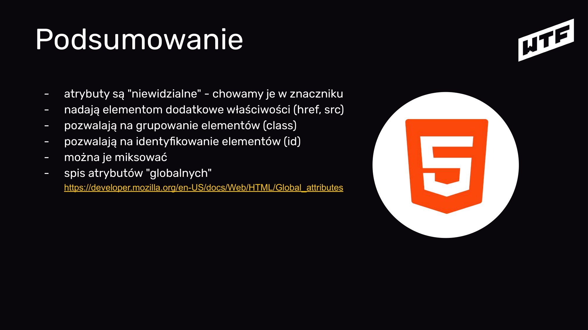

notatki z modułu 3
w main opakowywujemy unikalną treść dla danej strony
M03L02: Jest GIT! [14:35]

Jest GIT!
UWAGA: BĘDĄ UPROSZCZENIA,
będziemy używać gita jako maszynki do robienia zip-ów
Problemy przy tworzeniu oprogramowania, w sumie ogólnie przy tworzeniu rzeczy na komputerze
Wczoraj działało...

Gdybym miał poprzednią wersję...

Skasowałem przez przypadek plik...

Chciałbym zrobić zmiany w kilku plikach, ale móc cofnąć do obecnego stanu...

Chcę pracować nad projektem grupowym...
I wiele, wiele innych

What if I tell you... There's an app for that.

Linus Torvalds

LINUX
GIT
Mamy tylko aktualną wersję nie mamy historii tego co dokładaliśmy
Utworzyłem projekt.
Pliki:
nowy: index.html
nowy: style.css
⇣
Dodałem tło strony
Pliki:
zmiana: style.css
⇣
Rozwiązałem pracę domową
Pliki:
zmiana: index.html
zmiana: style.css
⇣
Dodałem info o kolejnym dniu nauki
Pliki:
zmiana: index.html

Instalujemy program do obsługi GIT-a
Mac/Win: https://desktop.github.com
Linux: https://github.com/shiftkey/desktop/releases
Można również korzystać z terminala, ale wygodniej nam będzie przy wykorzystaniu GitHub Desktop: https://git-scm.com/
git config --global user.name "Jan Nowak"
git config --global user.email jannowak@example.com

Utworzyłem projekt.
Pliki:
nowy: index.html
nowy: style.css
⇣
Dodałem tło strony
Pliki:
zmiana: style.css
⇣
Rozwiązałem pracę domową
Pliki:
zmiana: index.html
zmiana: style.css
⇣
Dodałem info o kolejnym dniu nauki
Pliki:
zmiana: index.html
Repozytorium = projekt, czyli wszystkie pliki
Załóżmy repozytorium

git init

.git

Zróbmy zmiany (i je podejrzyjmy)

Commit = stan projektu i opis tego co się zmieniło od ostatniego zapisu

Utworzyłem projekt.
Pliki:
nowy: index.html
nowy: style.css
⇣
Dodałem tło strony
Pliki:
zmiana: style.css
⇣
Rozwiązałem pracę domową
Pliki:
zmiana: index.html
zmiana: style.css
⇣
Dodałem info o kolejnym dniu nauki
Pliki:
zmiana: index.html

git status

git add .
git commit -m "opis zmian"

Jak często commitować?

To be continued...
M03L03: Git vs GitHub [10:45]

GitHub

GitHub != Git
chociaż tutaj mamy części wspólne ;)


Zakładamy konto na githubie
https://github.com

Zakładamy repozytorium na GitHubie

git remote add origin https://github.com/user/repo
Podpinamy repozytorium zdalne do lokalnego

Wrzucamy kod na GitHuba

git push

Podsumowanie
- GIT pozwala na sprawne zarządzanie zmianami w projekcie
- Działa lokalnie
- Do działania zdalnego potrzebuje serwera (np. GitHub)
- Znajomość podstaw GIT-a jest wymagana niezależnie od technologii
- Konto na GitHubie jest Twoją programistyczną wizytówką, zadbaj aby była ładna i prawdziwa :)
- Commitujemy jak dokładamy jakąś widoczną zmianę do projektu (lepiej częściej, niż za mało)
- Podstawowy flow: git add . / git commit -m "opis zmiany" / git push

To be continued...
M03L04: Atrybuty w HTML [22:23]

WTF: HTML II

W poprzednim odcinku...

<znacznik atrybut=”wartość”>treść</znacznik>
ATRYBUTY (i nowe znaczniki)
<br>
nowa linia; jest to znacznik występujący pojedynczo, nie ma
swojej pary, tzw. znacznik samozamykający.

<b> vs <strong> vs <i> vs <em>
Elementy do wyróżniania tekstu?

bold <b> & italic <i>
nie mają dużego znaczenia semantycznego - służą do wyróżnienia fragmentu z tekstu otaczającego

<strong> - wyróżnia wizualnie tekst poprzez pogrubienie, ale też podkreśla wysoką istotność i poważność frazy w nim zawartej
<em> - wizualnie pochyla tekst, ale dodatkowo podkreśla, że tekst może mieć inne znaczenie (np. ironia)

<u>
Kiedyś - stylowanie tekstu przez podkreślenie
Teraz - dodanie "nietekstowej adnotacji" na przykład
oznaczenie błędu
3. JavaScript
2. CSS
1. HTML
0. TREŚĆ
Warstwy strony internetowej
<a href="" target="">opis łącza</a>
target="blank" - otworzy się link w nowej karcie

<element id="moj-identyfikator">
atrybut id - identyfikuje element (przydaje się do nawigacji w obrębie dokumentu)
Identyfikator musi być unikalny w ramach dokumentu (id="moj-identyfikator"), odnosimy się do niego podając na początku jego wartości znak #. Czyli jeśli elementowi nadamy id o wartości "notatki", to odnosimy się do niego wpisując href="#notatki".

<nav>
Nawigacja
Znacznik wskazuje, że jest to główna nawigacja po stronie/serwisie. <nav> wstawiamy do znacznika <header>, który znajduje się w <body>, ale poza znacznikiem <main>.
Każdą treść powtarzalną wyrzucamy poza main, czyli oprócz znacznika header może to być przykładowo znacznik footer. Treści takie nie są analizowane przez wyszukiwarki czy czytniki treści, które skupiają się na treści zawartej w tagu main.
<img src="" alt="">
img - obrazek o podanym adresie; img jest znacznikiem samozamykającem się, tak jak <br>

Podsumowanie
- liatrybuty są "niewidzialne" - chowamy je w znaczniku
- nadają elementom dodatkowe właściwości (href, src)
- pozwalają na grupowanie elementów (class)
- pozwalają na identyfikowanie elementów (id)
- można je miksować
- spis atrybutów "globalnych": https://developer.mozilla.org/en-US/docs/Web/HTML/Global_attributes

To be continued...
M03L05: Klasy CSS [24:34]
WTF: CSS II

W poprzednim odcinku...
<znacznik style=”color:yellow;”>treść</znacznik>
Styl przy znaczniku z wykorzystaniem atrybutu style nazywamy stylem inline
Czy ma to sens?
#id .class element - Prawdziwe selektory

<znacznik class=”name”>treść</znacznik>
Jak dostać się do takiego elementu?

<znacznik class=”name”>treść</znacznik>
↓
.name {
właściwość: wartość;
}
. (kropka) - selektor klasy

<znacznik id=”name”>treść</znacznik>
↓
#name {
właściwość: wartość;
}
# (hash) - selektor id
ID na stronie musi być unikalne, tylko jedno o danej nazwie!

!important to zmora, jeśli chodzi o stylowanie. Nie powinno się go używać.
Przykład w krokach:
- Mam wybrany jeden paragraf <p> o klasie z kolorem czerwonym - mój paragraf jest czerwony.
- Dodaję do arkusza styli regułę na wszystkie <p> z kolorem niebieskim - mój paragraf nadal jest czerwony, ale wszystkie pozostałe stają się niebieskie.
- Do arkusza styli dodaję p {color: blue !important;} - mój paragraf staje się niebieski, mimo, że ma klasę z kolorem czerwonym.

Łączenie selektorów

#name {
color: red;
}
<span style=”color: yellow†id="name">treść</span>
Jakiego koloru będzie treść?

Specyficzność w CSS - co w sytuacji, gdy do danego elementu mamy zdefiniowane stylowanie zarówno w pliku css, jak i przy danym znaczniku jako inline?

źródło: sport.pl
!important style="" #name .name element

body h1 {
color: yellow;
}
h1 {
color: red;
}
html body h1 {
color: yellow;
}
#main-header {
color: red;
}
html body h1#main-header {
color: yellow;
}
body .section #main-header {
color: red;
}

html body h1 {
color: yellow;
}
#main-header {
color: red !important;
}

<h1 style="color:blue">Nagłówek</h1>
h1 {
color: red !important;
}

<h1 style="color:blue">Nagłówek</h1>
body section#main h1.heading {
color: red;
}
Jeśli specyficzność jest równa - pierwszeństwo ma selektor "bliżej" elementu
Wyobrażamy sobie, że style zdefiniowane w pliku style.css są umieszczone w pliku HTML w miejscu, gdzie znajduje się odniesienie do pliku css. Wtedy zastosowany zostanie styl umieszczony niżej, a tym samym fizycznie bliżej elementu.
style.css
body section#main h1.heading {
color: red;
}
section#main h1.heading {
color: blue;
}
style.css
body section#main h1.heading {
color: red;
color: blue;
}

Rekomenduję dodawać klasy do wszystkich elementów i unikać zagnieżdżeń

There are only two hard things in Computer Science: cache invalidation and naming things.
-- Phil Karlton

Nazewnictwo klas
- używaj pojedynczych słów z j. angielskiego
- nazywaj rzeczy zgodnie z ich funkcją na stronie
- startuj z małej litery np. header nie Header
- nie zaczynaj od cyfry
- jeśli musisz użyć dwóch słów użyj tzw. kebab case np. news-listing
- staraj się, żeby element miał jedną klasę (nie zwiększaj specyficzności bez potrzeby)
Podsumowanie
- html class="name" = css .name
- html id="name" = css #name
- stylujemy po klasach (bez zagnieżdżeń!)
- nazywamy klasy po angielsku zgodnie z przeznaczeniem
- tworzymy klasy nawet mamy jeden element danego typu
- specyficzność może dać popalić ;)
- nie używamy !important i stylów inline'owych

To be continued...
M03L06: Opowieść o wężu, kebabie, wielbłądzie i Pascalu [04:55]

Opowieść o wężu, kebabie, wielbłądzie i Pascalu
Najtrudniejsza rzecz w programowaniu
Nazywanie rzeczy

Nazywanie rzeczy
- nazwy zapisujemy bez polskich znaków (ąćęłńóśżź)
- nie używamy spacji
- najlepiej używać angielskich słów (treść oczywiście może być w innym języku)
- trzymamy się jednego schematu (konsekwencja jest istotna)

Konwencje nazewnictwa

<H1> My super bold header
camelCase

mySuperBoldHeader

kebab-case

my-super-bold-header

snake_case

my_super_bold_header

PascalCase

MySuperBoldHeader

theEnd
the-end
the_end
TheEnd
M03L07: Klan - dziedziczenie [09:22]

WTF: Klan II

Dziedziczenie

wartość: inherit;
korzystamy z niej, jeśli chcemy, aby dziecko przejęło wartość po rodzicu

The end
M03L08: Jak działa internet i protokół HTTP? [20:17]

Jak działa przeglądarka?
Internet (wg IT Crowd)

HTTP - Protokół, którego używa Twoja przeglądarka*
* (w większości przypadków)

HTTP - Hypertext Transfer Protocol

HTML = HyperText Markup Language
http = protokół do transportowania htmla*
* i całej reszty, którą widzisz na stronach

HTTPS - Hypertext Transfer Protocol Secure
URL - Uniform Resource Locator
https://cotenfrontend.pl:443 / index.html?parametr=wartość
↑
protokół
host (adres serwera)
port
super ważny / (root)
ścieżka dostępu do zasobu
parametry

request - response
- wpisuję w pasku adresu cotenfrontend.pl [enter]
- przeglądarka szuka serwera cotenfrontend.pl [DNS]
- po znalezieniu serwera odpytuje go o index (jeśli podamy sam adres serwera) - to co jest indexem zależy od konfiguracji serwera (nie musi to być index.html, choć w przypadku stron statycznych jest to najczęstszy przypadek)
- serwer wysyła do przeglądarki zawartość html
- przeglądarka wczytuje html i szuka wszystkich dodatkowych zasobów: style, skrypty, obrazki itp. i dla każdego z zasobów wykonuje zapytanie
- Przeglądarka parsuje i renderuje stronę

Zobaczmy jak to działa!

KODY ODPOWIEDZI HTTP

-200-
OK
-30x-
Szukasz w złym miejscu - przekieruję Cię w dobre (bo wiem gdzie)

-404-
Nie mam tego czego potrzebujesz. Sorry.

-50x-
Nie czuję się najlepiej... Błąd wewnętrzny serwera.

Kody HTTP
1xx: hold on
2xx: here you go
3xx: go away
4xx: you fucked up
5xx: I fucked up

/
Czym jest root?

https://cotenfrontend.pl/img/wtf.svg
1: <img src="/img/wtf.svg" alt="Logo WTF: Co ten frontend"/>
2: <img src="img/wtf.svg" alt="Logo WTF:
Co ten frontend"/>

1
https://cotenfrontend.pl

https://cotenfrontend.pl/
1: <img src="/img/wtf.svg" alt="Logo WTF: Co ten frontend"/>
⇣
pobierz: https://cotenfrontend.pl/img/wtf.svg ✅ 200 OK
2: <img src="img/wtf.svg" alt="Logo WTF: Co ten frontend"/>
⇣
pobierz: https://cotenfrontend.pl/img/wtf.svg ✅ 200 OK

2
https://cotenfrontend.pl/podstrona/

https://cotenfrontend.pl/podstrona/
1: <img src="/img/wtf.svg" alt="Logo WTF: Co ten frontend"/>
⇣
pobierz: https://cotenfrontend.pl/img/wtf.svg ✅ 200 OK
2: <img src="img/wtf.svg" alt="Logo WTF: Co ten frontend"/>
⇣
pobierz: https://cotenfrontend.pl/podstrona/img/wtf.svg ⌠404 Not found

WTF?!

Brak / z przodu drugiej ścieżki uczynił
adres do zasobu relatywnym*
*dlatego przeglądarka szukała pliku w aktualnym "katalogu" - /podstrona/img/wtf.svg

Tworząc stronę uruchamianą "z dysku" pomijaliśmy używanie slasha z przodu

Ale wkrótce będzie naszym dobrym przyjacielem 😎

Podsumowanie
- protokół który obsługuje strony internetowe i ich zawartość to HTTP (aktualnie coraz częściej HTTP/2)
- komunikacja przeglądarka - serwer odbywa się na zasadach request - response
- odpowiedzi serwera mają różne kody (i pozwala nam to na diagnozowanie problemów)
- root (/) jest istotną częścią ścieżek do zasobów (i dobrze wiedzieć jak działa :))

To be continued...
M03L09: WTF: JavaScript [20:43]

WTF: JavaScript

JS = JavaScript

JavaScript != Java
NIGDY nie używaj takiego skrótu

!= jest operatorem porównania - nie równa się
JavaScript != Java
NIGDY nie używaj takiego skrótu

Java ma się do JavaScriptu jak... kot do kotary

Java ma się do JavaScriptu jak... świnka do świnki morskiej

Java ma się do JavaScriptu jak... sam do samochodu

Java is to JavaScript like... ham to hamster
Będziemy uczyć się ECMAScript 2015+ (ES6+)

Co to jest ECMAScript 6+
- ECMAScript jest to ustandaryzowany przez organizację ECMA skryptowy język programowania
- JavaScript implementuje rzeczy ze specyfikacji ECMAScript
- Rozwój ECMAScript mocno przyspieszył przez szerokie wykorzystywanie JavaScriptu
- ES6 (i nowsze) wprowadzają wiele udogodnień dla developerów
- Nowe feature'y mogą nie być wspierane we wszystkich przeglądarkach (ale są na to sposoby 😎)

3. JavaScript
2. CSS
1. HTML
0. TREŚĆ
Warstwy strony internetowej

Z czego składa się JavaScript?
- Wartości
- Wartości
- Operacje porównywania
- Wartości
- Operacje porównywania
- Literały

- Wartości
- Operacje porównywania
- Literały
- Zmienne

- Wartości
- Operacje porównywania
- Literały
- Zmienne
- Obiekty


Wartości dla JS tym, czym liczby dla matematyki

Wszechświat wartości

.js
Pliki zawierające kod JavaScript mają rozszerzenie .js*
*ale podobnie jak style - mają też swój znacznik - <script>

Poskryptujmy!

<script>
alert('Siema!')
</script>
Znacznik <script>
<script
src="main.js">
</script>
Znacznik <script>

JavaScript daje nam masę narzędzi!
console.log('Siema!');

console.log(name); console.log(age);

‘
Backtick / backquote
(znajdź go na klawiaturze, zwykle występuje z ~)
Używamy go, jeśli chcemy wykorzystać w jakiejś funkcji jednocześnie zmienną i tekst - taki ciąg znaków nazywamy literałem.
console.log(`Nazywam się ${firstName} i mam ${age} lat.`);
${zmienna}
console.log(`Nazywam się ${name} i mam ${age} lat`);
Podsumowanie
- Kod JS uruchamia się raz (po załadowaniu strony)
- Java to nie JavaScript
- JavaScript implementuje rzeczy ze specyfikacji ECMAScript
- JavaScript to frontendowe programowanie
- Za pomocą JS można robić różne szalone rzeczy (a ja jestem ekspertem od szalonych rzeczy 😎)

To be continued...
M03L10: Terminal, czyli ocb z tym czarnym okienkiem - MacOS [05:11]

Terminal

OCB z tym czarnym okienkiem
Różnice w systemach operacyjnych
MacOS
- cd ~
przejście do katalogu domowego - ls
wypisanie zawartości katalogu - cd ..
przejście do katalogu wyżej - cd nazwa-katalogu
przejście do katalogu o nazwie nazwa-katalogu - code .
uruchomienie visual studio code w aktualnym katalogu - pwd
wyświetlenie aktualnej ścieżki - mkdir nazwa-katalogu
stworzenie katalogu o nazwie nazwa-katalogu

Linux
- cd ~
przejście do katalogu domowego - ls
wypisanie zawartości katalogu - cd ..
przejście do katalogu wyżej - cd nazwa-katalogu
przejście do katalogu o nazwie nazwa-katalogu - code .
uruchomienie visual studio code w aktualnym katalogu - pwd
wyświetlenie aktualnej ścieżki - mkdir nazwa-katalogu
stworzenie katalogu o nazwie nazwa-katalogu
Windows
- cd C:\
przejście do głównego katalogu na dysku C - dir
wypisanie zawartości katalogu - cd ..
przejście do katalogu wyżej - cd nazwa-katalogu
przejście do katalogu o nazwie nazwa-katalogu - code .
uruchomienie visual studio code w aktualnym katalogu - cd
wyświetlenie aktualnej ścieżki - mkdir nazwa-katalogu
stworzenie katalogu o nazwie nazwa-katalogu
The end
M03L11: Tydzień III - prace domowe [04:07]
Tydzień III: Prace domowe
0. Baw się dobrze!

1. Załóż konto na GitHubie i zainstaluj program GitHub Desktop
https://github.com

2. Wrzuć projekt homepage na GitHuba

3. Zacznij commitować zmiany

4. Rozbuduj projekt homepage
- W katalogu homepage stwórz kolejne pliki
- Do każdego pliku dołóż jakieś zdjęcie
- Stwórz nawigację między plikami
- Pamiętaj o formatowaniu i sprawdzaniu swojego kodu za pomocą validatora
5. Dodaj klasy
- Uzupełnij HTML-a o klasy i utwórz odniesienia do nich w stylach
- Nadaj style nagłówkom za pomocą klas
- Pamiętaj o odpowiednim nazewnictwie
- Nie bój się eksperymentować!
6. Przejdź labirynt*
*i obejrzyj nagrodę - tylko bez spoilerów!

7. Dołóż skrypt do swojej strony i w konsoli przywitaj się z odbiorcą :)

Good luck!